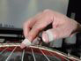
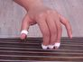
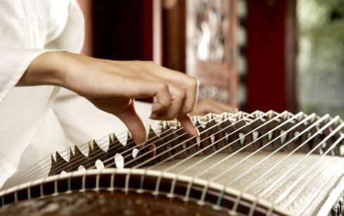
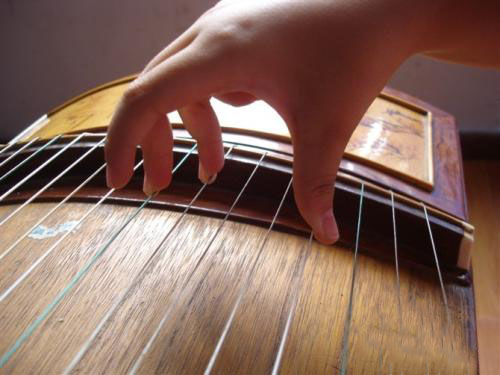

音调弦定音为五声音阶（即首调）三个八度音域，多用G调或D调，F调或C调或A调较少使用。D调时绿弦为5，G调时绿弦为2.
古筝分四组。倍高音1，高音12356，中音12356（do re mi sol la），低音12356和倍低音12356。
当乐曲出现4（fa）或7（si）音时，只能依靠左手在筝码左侧的弦段上用力按压3弦或6弦，使其增加张力获得。具体4音的奏法是先在距离筝码约1分米处用力按压3弦，然后用右手弹奏这根弦，即可奏出4音来。同样，在演奏7音时，也用左手在筝码左侧按压6音弦即可。
|  |
 |
 |
 |
| 抹 |
按弦 |
小撮 |
大撮 |
古筝传统的常用演奏手法采用右手大、食、中、无名四指拨弦，演奏出旋律、掌握节奏，左手演奏法还有在筝柱左侧顺应弦的张力、控制弦音的变化，以调整音高，完善旋律。
筝的指法颇多，右手有勾、托、劈、挑、抹、剔、打、摇、撮等，左手有按、滑、揉、颤等。 古筝的传统演奏手法到了近代有了新的突破，1953年赵玉斋先生创作了《庆丰年》，解放了左手，曲调上运用复调的手法，采用了左右手交替和多声部演奏手法，大大丰富了演奏技巧，使古筝的演奏技术得到一个突破性的发展。
| 符号 |
名称 |
指法说明 |
符号 |
名称 |
指法说明 |
| ┕ |
托 |
大指向掌心方向拨弦 |
¬ |
劈 |
大指向掌外方向拨弦 |
| 丶 |
抹 |
食指向掌心方向拨弦 |
^ |
打 |
名指向掌心方向拨弦 |
| ∩ |
勾 |
中指向掌心方向拨弦 |
* |
花指 |
大指向掌心方向连拨数弦 |
| 彡 |
摇指 |
手指向里向外连续快速弹弦 |
↗↘ |
刮奏 |
自上而下或自下而上连续快速刮奏 |